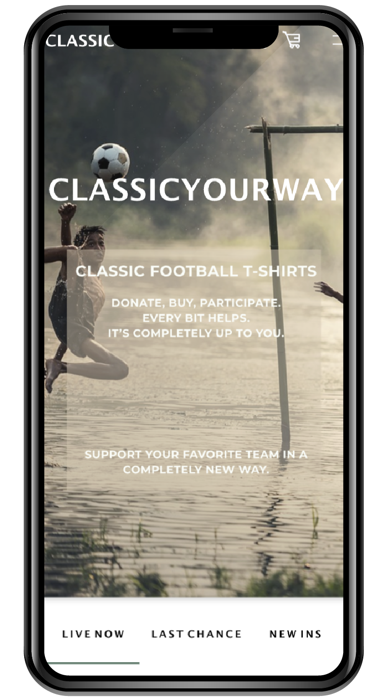
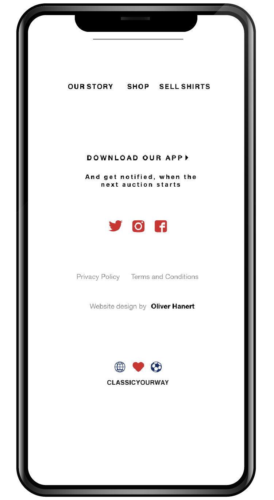

Endelig Prototype
03.03.02 endelig prototype



Prototype/Wireframe
Adobe XD/Five-act-interview
Individuel
Krav
Færdig forside
Mindst 4 andre sider
Gøre brug af UI Kits, UI Patterns, samt transitions
Opgaveformulering
I denne opgave skulle man optimere sin prototype, ud fra de brugertest (five-act interview) man fik lavet og de insights man opnåede.
Den anden fase ud af i alt tre på dette tema fokuserede på indholdsproduktion med fokus på copywriting, herunder blandt andet copy –og microcopy, samt gennem viden om UI-konventioner, prototyping og testing.
Jeg fik ligeledes kendskab til erhvervets centralt anvendte teknologier til produktion af digitalt indhold, så som prototyping i Adobe XD, herunder anvendelse af UI-kits -og patterns.
På baggrund af mine endelige skitser og indholdsproduktion, herunder også implementering af den visuelle stil i selve prototypen, som blev fastlagt i mit styletile og moodboard, var jeg nu klar til at gå ind i test-fasen, hvor min prototype blev testet ved “five-act-interview". Herunder kan mit moodboard og styletile ses.


Ud fra de opnåede indsigter fra (“learn-fasen”), optimerede jeg min prototype, så den endelige prototype kunne færdiggøres og efterfølgende pitches. På baggrund af de resultater jeg fik fra testfasen, kan man herunder fornemme udviklingen af min protype, hvor der kan ses tre før/efter-billeder.


Med microcopy ønsker kan man altså, at hjælpe brugere til at nå derhen, hvor de gerne vil hen eller bare give en information af en eller anden art. Et godt eksempel er call to action (CTA), som guider brugere hen til deres næste step.
Førhen har jeg aldrig rigtigt overvejet, hvor vigtigt det kan være med små beskeder og informationer på en hjemmeside. Men efter arbejdet med denne opgave, har jeg virkelig lært også at bruge det selv, hvilket bare kan ses ovenfor.